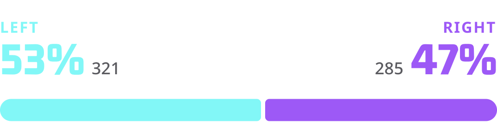
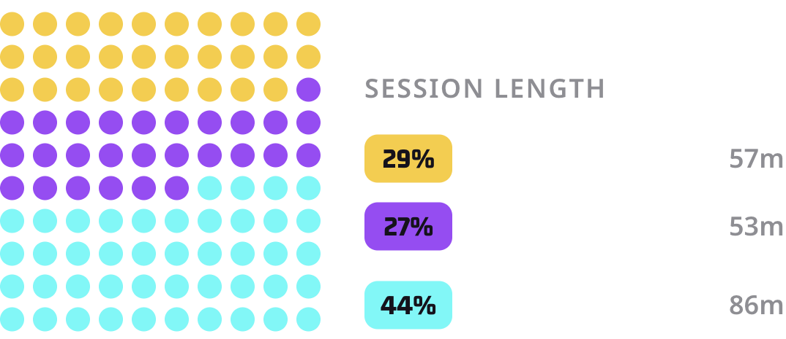

From the parking lot to last chair
Dozens of metrics a run. You just ski.
Most trackers hand you vertical and a speed number and call it a day. Tracked Out breaks the run down: how you turned, where you engaged the slope, how fast you gave the vertical back, and how much of the day you actually spent riding.
Efficient GPS and smart run detection — a full day on a fraction of your battery, no signal required.


Everything we measure
FREE PRO PASSIt doesn't just record your day. It helps you learn from it.
Ski Sensei scores five categories every session, spots the technical gap, and gives you the drill for the next run. Built from the data Tracked Out already collects — no extra hardware, no video, no coach on the payroll.
"Left turns on beginner terrain dominate (174 turns) with a smooth average turn angle of 45.6°, but intermediate and advanced slopes show slightly tighter angles. Left and right turn counts are well balanced (318 vs. 314), indicating good symmetry."
Work on increasing controlled, tighter turns on advanced terrain for more precision and carving. Focus on slow, methodical turns to improve edge control and maintain speed.
All of the mountains, in your pocket.
Trail maps for 4,000+ resorts layered on real terrain. Tilt it, shade it by pitch, flip to satellite, tap any run for its numbers and your history on it — then take it all offline.
2656 × 1240
Layers stack. Slope shading over satellite is how you find the north-facing snow three days after a storm.
Max sustained pitch 38.4°
North-facing, holds snow
You've skied it 14× · best 2:08
4,072 resorts. Including yours.
Every Epic, Ikon, Mountain Collective and Indy mountain is in here, alongside the two-lift community hill an hour from your house that no other app bothered to map. Search by name, pass or region, favorite what you ride, and download it for the days the mountain has no bars.
Tracking, trail names and stats all keep working in airplane mode.
Nobody's waiting at the bottom anymore
Six people, three abilities, two radios that don't work. Crew turns the group text into something that actually functions on a mountain: see where everybody is, know who's lapping what, and settle the vertical argument with numbers at the end of the day. Opt in per day, off by default, gone at last chair.
Stop burning laps looking for people
Everyone who's opted in shows up on the trail map, on the real terrain, with the run they're on and how long ago they moved. You can tell the difference between "on the chair behind you" and "went to the lodge forty minutes ago" without sending a single text.
Tap a name to see their last run and pick a lift to meet at.
Settle it with numbers
Vertical, runs, top speed, time on snow — ranked for the day, the trip or the whole season. It's the same data your session already collects, just pointed at your friends instead of your own history.
Nobody gets to claim 30,000 feet on a day the lifts opened at eleven.
Sharing that turns itself off
Crew works on day passes. You share a code with the people you're riding with, it lasts until last chair, and then it's over — nobody stays on your map for the rest of the season because you went skiing together once in December.
No accounts, no friend graph, no follower count. Your history still lives only on your phone.
Crew is in beta and rolling out to Pro Pass holders first. Turn it on in Settings → Crew, or get on the list and we'll tell you when it's your turn.
"Best way I've found to remember the best paths down the hill. Super accurate and EASY TO USE."
"Blown away by the ski metrics and map detail — felt like the dev was giving away too much in the free version."
"I used to get lost with no idea how many runs I'd taken. With Tracked Out, I stay on track!"
Go Track
Free, no account. First chair tomorrow, first recap tomorrow night.